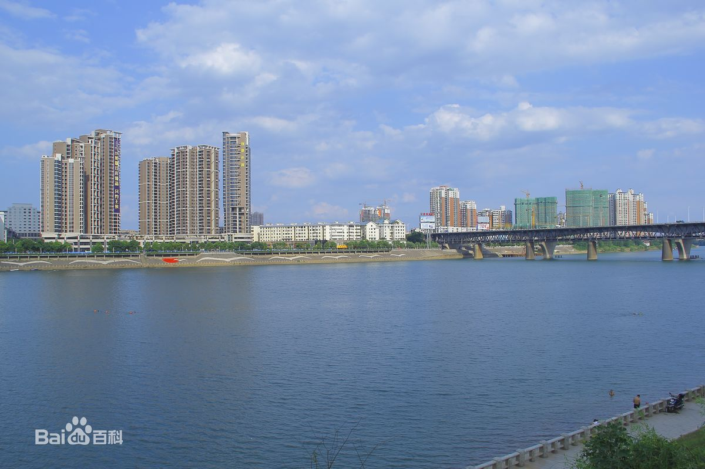
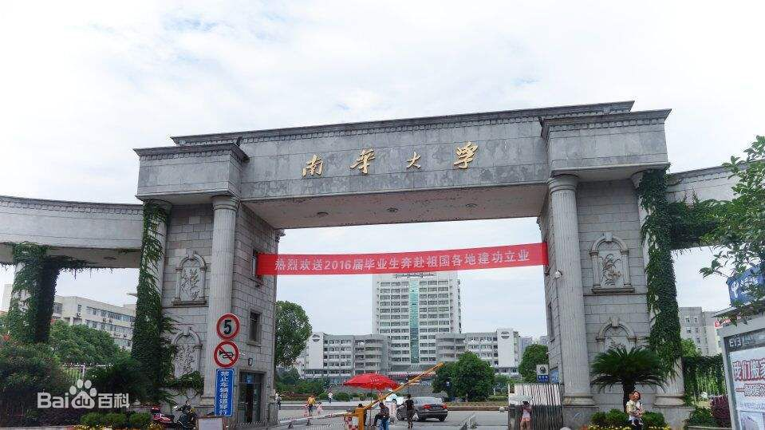
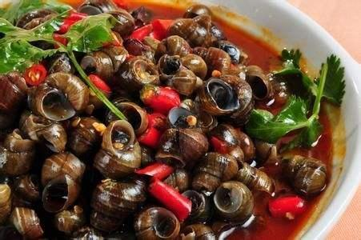
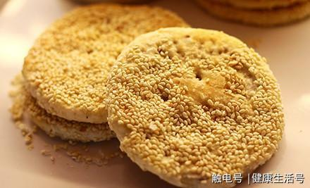
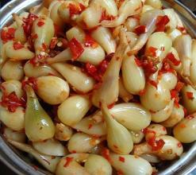
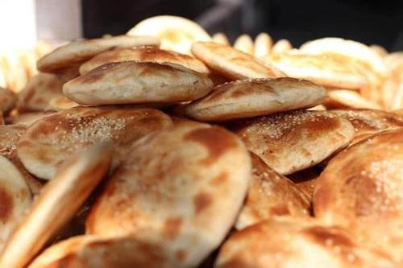
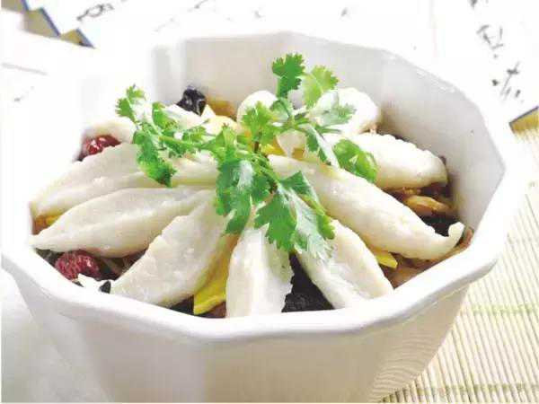

衡阳，湖南省地级市之一。位于中国南部，湖南省中南部，是长江中游城市群重要成员，湖南省域副中心城市，湘南地区的政治、经济、军事、文化中心衡阳城区横跨湘江，是湖南省以及中南地区重要的交通枢纽之一，多条重要公路、铁路干线在此交会。衡阳处于中南地区凹形面轴带部分，构成典型的盆地形势，属亚热带季风气候。
衡阳是中南地区重要的工业城市，是“中国制造2025”试点示范城市群城市之一，拥有湖南第一家综合保税区和国家级高新区，被定位为国家承接产业转移示范区以及全国加工贸易重点承接地。衡阳也是国家服务业综合配套改革试点城市、国家生态文明先行示范区，国家园林城市，中国“中国抗战纪念城”。

截至2017年，衡阳市下辖5区5县，代管2县级市，总面积15310平方公里，衡阳市全域常住人口720.53万人。衡阳市拥有南华大学、衡阳师范学院、湖南工学院等15所高校。2017年，衡阳市实现地区生产总值3132.48亿元，按可比价计算，增长8.5%。被评为2018中国大陆最佳商业城市100强。
衡阳鱼粉的起源应追溯到衡阳县的渣江鱼粉，其早在上世纪就声名远扬，但是由于当时的交通不便，物资贫瘠，经济落后，其发展只限于衡阳县区域。直到一九八五年，衡阳县城西渡镇才开设了第一家鱼粉店。将鱼现杀后切成块状，锅中油烧红，将鲜鱼块置入锅中稍作煎炸，加入西渡湖之酒，然后快速翻炒，加入盐与浓汤，再放进姜片、蒜茸等，加盖煮熬。但切忌不断揭盖翻锅，这样易使鱼汤带有腥味。煮熬一段时间，鱼汤变成乳白色，这时可以揭盖调味，再放入新鲜蔬菜，起锅即成。将烫好的米粉（其中尤以渣江米粉为上佳）淋上新鲜鱼汤，一碗鱼粉大功告成。

衡阳地方风味小吃。又名“喝螺”。制法为：选大小均匀之田螺或石螺置于清水盆中，滴茶油小许，使之吐出杂质污物。二、三天后，用冷水洗净，将瘦猪肉泥掺水拌匀，倒入盆中，使螺饱食，再钳去螺尾，加盐少许反复搓洗干净，置炒锅内旺火翻炒，待水分稍干，加茶油再炒，至香味四溢，螺口掩皮脱落，再加盐和绍酒复炒，起锅后，与生姜、辣椒、酱油。葱蒜、味精等佐料一道入骨清汤锅中盖煮。食时舀出，手持将螺口对住嘴，吸气唆（喝）取，螺肉即人，故名“唆（喝）螺”。本品汤鲜味美，清香脆嫩，清火开胃，爽口宜人。

衡阳酥薄月原名酥薄芝麻饼，又称太师饼、胡饼、宫饼、小饼、月团、荷叶、金花、芙蓉、月光饼、团圆饼等，经几百年社会变迁和技术的发展，逐步演变成当今的酥薄月。在衡阳生产已有140余年的历史。配料考究。做工精细、风味独特、松酥可口。具有浓厚的麻仁、玫瑰、桂花清香，食而不觉甚甜，香酥而不油腻；有祛风润肠、理气解郁、和肠胃、通血脉、润肌肤之功效。

耒阳坛子菜，是湖南省衡阳市耒阳地区的特产。坛子菜是用坛子腌制的咸菜，不同于泡菜、酱菜等腌菜，它突出的是坛子，坛子年代越久腌出来的菜越香。坛子菜加工非常讲究，几乎所有的蔬菜都可以用来制作坛子菜。主要制作食材有豇豆、辣椒、茄子、豆腐乳、萝卜、黄豆、生姜、洋姜、刀豆、榨菜等。坛子菜品种多样，风味独特，有香、脆、咸、辣、酸、甜等特点。

茅市镇烧饼在衡阳市地区享誉盛名，正宗地道的茅市烧饼之所以深受大家的相爱，在于他精细的配方和特殊的烘烤方式,其采用我们茅市镇本地有机面粉为原料，按历代相传的手工工艺精制而成的。也是衡阳市特产糕点的名点之一，制作讲究，卫生，不使用任何防腐剂和色素，以其皮酥、清晰多层、味道香浓酥软、入口即溶、馅心冰甜而闻名，老少皆宜，吃后口齿留香，令人回味无穷，是简单可口的健康食品，因其口味松、香、酥、软而备受人们喜爱，也是是湖南特产中衡阳市地区火爆的特色传统糕点之一。

鱼丸是高蛋白食品。绞鱼肉时，细细的鱼刺连肉一起绞成了泥，因此鱼丸里还含有丰富的钙。至于肥膘，据《本草纲目》记载，适当吃吃肥肉，可解各种肝毒，还能调养胃肠，通调小便。打鱼丸之前还有好几道工序，首先要将鱼肉、生姜绞成泥。再将猪肥膘绞成泥，最后混合。在搅拌过程中，又加入食盐、葱白、生粉、蛋清、白胡椒和少许味精，还不时洒几滴水。鱼肉、肥膘和配料完全融合后，准备工作才算全部就绪。
No 1:南岳衡山;
是我国五岳之一，以壮美的自然风光和佛、道两教并存的人文景观而著称，被誉为“中华寿岳”。景区内深谷青翠、飞瀑流泉，处处透着一份静意，分散着星罗密布的寺院庙宇，更为衡山添加了不少虔诚的气韵。衡山是汉传佛教的圣地，这里是佛教禅宗“南宗”的祖源，南宗的“南岳派”在这里开派。衡山还是南中国的抗战圣地，香炉峰下“南岳忠烈祠”，祭奠、埋葬着在抗战正面战场中阵亡的中国军人。每年的农历八月初一，是“南岳大帝”的圣诞，当天来衡山进香朝拜大帝的信众有时多达十万人。12月至次年2月初到衡山，则可以欣赏到著名的衡山雾淞。
查询百度百科No 2:石鼓书院;
为宋代四大书院之首，位于国家历史文化名城、湖南省第二大城市——衡阳市石鼓区，海拔69米，面积4000平方米。石鼓书院立有高约两米石鼓。晋时庚仲初《观石鼓书》云：“鸣石含潜响，雷骇震九天。”北魏郦道元《水经注》则载：“具有石鼓高六尺，湘水所经，鼓鸣则有兵革之事。”石鼓山峻峭挺拔，风景奇异，历有湖南第一名胜之称。
查询百度百科No 3:衡阳保卫战纪念馆;
陆家新屋(衡阳保卫战纪念馆)又是珍贵的抗战遗址。1944年6月27日，一小队日寇骑兵撞入这里，第二天-中央军府得知消息派了一排兵力进行围剿，双方激战达半月之久，致使陆家新屋遭受严重创伤。至今南向墙面尚保留数10处当年留下的弹痕，右侧厢房封火墙山屏上的一个弹洞，直径达1米左右，是衡阳保卫战抗日保卫战难得的历史见证，也是日寇侵华战争的罪证，它对于警示人们不忘国耻、居安思危有着重要的价值和意义。
查询百度百科No 4:回雁峰;
靠近湘江之滨，在衡阳湘江上的公路、铁路两用桥附近。立在回雁峰，不仅可俯瞰大桥，还可纵观衡阳城全貌。回雁峰为南岳七十二峰之首。古人一直认为，北来的大雁南飞至此处便不再南飞了，只等来年春天再飞回北方，故名。杜甫就写过“万里衡阳雁，今年又北归”。
查询百度百科No 5:罗荣桓故居;
罗荣桓故居位于中南重镇、历史文化名城——衡阳市衡东县荣桓镇南湾村，为国家4A级旅游景区、全国重点文物保护单位、全国100个红色旅游经典景区、全国爱国主义教育示范基地、国家国防教育示范基地、第四届中国红色旅游市场游客满意十佳景区。
查询百度百科2018年，衡阳市实现地区生产总值3046.03亿元，按可比价计算，比上年增长8.3%。其中，第一产业增加值337.01亿元，增长3.1%，第二产业增加值1023.59亿元，增长7.0%，第三产业增加值1685.43亿元，增长10.6%。按常住人口计算，人均地区生产总值42163元，增长8.6%。衡阳市三次产业结构为11.1∶33.6∶55.3。规模以上服务业实现营业收入236.07亿元，增长14.7%；实现利润总额16.91亿元，增长9.7%。第三产业占地区生产总值的比重比上年提高4.6个百分点；

2018年，全市年末从业人员113万人，新增城镇就业6.75万人，失业人员再就业3.23万人，就业困难对象再就业0.95万人，新增农村劳动力转移就业4.58万人，城镇登记失业率稳定在3.5%左右。新增贫困劳动力转移就业0.37万人，完成贫困家庭两后生培训582人。全市共发放创业担保贷款3.4亿元，直接扶持创业1120人,带动或稳定就业近1万人次。实现新增创业主体2.87万户，创业带动就业5.48万人。

2018年，衡阳市全年完成高新技术产业增加值473.7亿元，增长6.8%。专利申请量6838件，增长34.4%。现有特变、镭目省级科技创新人才团队2家，省级院士工作站6家，市级院士工作站10家。今年又推荐了2家省级创新团队。启迪之星、易创空间、衡阳县电商创业创新孵化基地、南华大学众创空间和衡山科学城科技企业孵化器，通过省里现场考察，即将正式挂牌。湖南省油茶产业技术创新战略联盟落户衡阳 。

2018年，衡阳市全体居民人均可支配收入25901元，增长8.6%。城镇居民人均可支配收入33741元，增长7.8%。其中，城镇居民工资性收入20012元、经营净收入4394元、转移净收入6209元、财产净收入3126元。农村居民人均可支配收入18250元，增长8.3%。其中，农村居民工资性收入9034元、经营净收入4819元、转移净收入4121元、财产净收入276元。